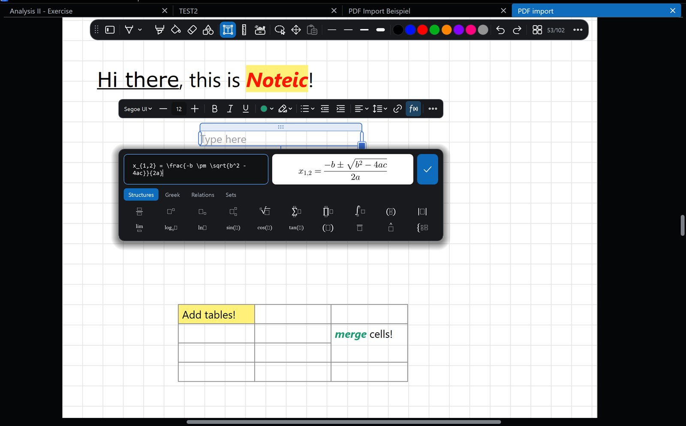

Text, formulas and tables
Type next to your handwriting: text boxes with formatting, tables, and LaTeX formulas with a live preview.

Text boxes#
- Tap Text box in the toolbar.
- Tap the page and type. To set the width yourself, drag sideways instead of tapping.
- Press Esc or tap somewhere else when you are done. An empty box disappears by itself.
To edit a box later, tap it with the text tool, or double-tap it with the lasso.
- Move: drag the strip on top of the box.
- Width: drag the bars on the left and right.
- Size: drag the bottom right corner to scale the text.
- Rotate: drag the knob below the box. It snaps to 0°, 90° and 180°; hold Shift for 15° steps. Double-tap the knob to straighten the box.
The text toolbar#
- Font, sorted into Readable, Handwriting, Code and math, and Decorative.
- Size from 6 to 200 pt, with Smaller and Larger.
- Bold, Italic and Underline (Ctrl+B, I, U).
- Text color with six favorites you can change, and Highlight with six colors.
- List: numbers, letters, Roman numerals, bullets, squares, dashes or a checklist. Tab and Shift+Tab indent.
- Alignment, Line spacing, Link and Formula.
- More (…): Insert table, Strikethrough, Clear formatting, Set as default and Delete text box.
New text boxes start in Segoe UI, 12 pt, black. Set as default makes your current font, size and color the new default.
Paste with formattingCopy text from a website, Word or OneNote and paste it onto the page (with no text box open): Noteic creates a new text box and keeps bold, italic, headings, lists and links.
Formulas#
- In a text box, tap Formula in the text toolbar.
- Type LaTeX, for example
x_{1,2} = \frac{-b \pm \sqrt{b^2-4ac}}{2a}. The preview shows the result as you type. - Or tap the building blocks under Structures, Greek, Relations and Sets. Tab jumps to the next empty box.
- Tap the check mark or press Ctrl+Enter.
The formula is placed as its own object just below the text box, in the box's text color. To change it, select it with the lasso and tap Edit formula, or double-tap it.
Tables#
- In a text box, open More (…) › Insert table.
- Choose a size, up to 6 × 6 to start. The table appears below the box.
- Type in the cells. Tab goes to the next cell; Tab in the last cell adds a row.
In a cell, More (…) inserts and deletes rows and columns, merges cells to the right or below, splits merged cells and sets a Cell color. Tables have up to 10 columns.